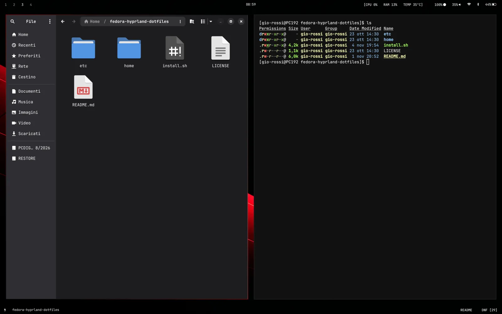

Aggiornato a novembre 2026
Fedora Hyprland Dotfiles
Un ambiente a finestre affiancate per Fedora Linux, progettato per convivere stabilmente con GNOME e calibrato per schermi moderni ad alta definizione.

Cos'è e perché esiste
Hyprland è un gestore di finestre per Linux che organizza le applicazioni a griglia, affiancandole automaticamente sullo schermo senza sovrapporle. Si controlla prevalentemente con scorciatoie da tastiera, offrendo un flusso di lavoro rapido e privo di distrazioni visive.
Questo progetto nasce come adattamento per Fedora Linux (versioni 40, 41, 42 e 44) della configurazione di Riccardo Palombo, ideata in origine per Arch Linux su computer ThinkPad.
Questo adattamento permette di provare Hyprland senza rinunciare a GNOME: le due sessioni coesistono e si sceglie quale avviare dalla schermata di login.
Cosa cambia rispetto alla configurazione originale
Il passaggio dall'ambiente di origine a Fedora ha richiesto modifiche precise per evitare conflitti e adattarsi al nuovo hardware:
Convivenza pacifica con GNOME
Su Arch Linux alcune variabili globali venivano scritte in /etc/environment, ma su Fedora questo corrompe l'avvio della sessione GNOME tramite GDM. In questo progetto il file /etc/environment non viene toccato: le variabili necessarie vengono caricate unicamente nella sessione Hyprland con hl.env, lasciando GNOME del tutto inalterato.
Adattamento all'ecosistema Fedora
Tutti i pacchetti di Arch e AUR sono stati convertiti per gli strumenti di Fedora. L'installazione sfrutta dnf e attiva un repository COPR per il menu delle applicazioni tofi. I binari Polkit in /usr/libexec/ gestiscono l'autenticazione con un fallback compatibile con GNOME, MATE e KDE. Nella shell viene inoltre impiegato lo strumento moderno eza al posto del deprecato exa.
Ottimizzazione per ASUS Zenbook 14 OLED
La grafica è calibrata per lo schermo OLED 2.8K (2880×1800 a 90Hz) con scala 1.6, garantendo elementi definiti e testi nitidi. Sul touchpad sono attivati scorrimento naturale, tocco per il clic e gesture a tre dita per cambiare workspace, eliminando le direttive specifiche del TrackPoint ThinkPad.
Hyprland 0.57+ (Lua) e barre Waybar stabili
Con Hyprland 0.57 il compositor adotta il parser nativo in Lua: la configurazione risiede in hyprland.lua, mantenendo il file hyprland.conf come riferimento compatibile. Le due barre Waybar sono gestite con systemd-run --user, garantendo persistenza ed evitando barre duplicate ai reload.
Come si usa
Mettere in funzione la configurazione è semplice, sia nell'installazione iniziale sia nell'utilizzo quotidiano.
Installazione rapida
Non servono configurazioni manuali complesse. Basta clonare il repository sul proprio computer ed eseguire lo script di installazione:
git clone https://github.com/giorossi-sudo/fedora-hyprland-dotfiles.git
cd fedora-hyprland-dotfiles
chmod +x install.sh
./install.sh
Lo script gestisce tutto in automatico: installa i pacchetti necessari con dnf, abilita COPR per tofi, installa i font JetBrains Mono e FontAwesome, posiziona le configurazioni in ~/.config/, copia lo sfondo in ~/Pictures/ e aggiunge alias comodi nella shell.
Cambio di sessione dal login
Dopo l'installazione è possibile passare liberamente da GNOME a Hyprland:
- Effettua il Logout dalla sessione attiva.
- Nella schermata di login GDM, seleziona il tuo utente.
- Clicca sull'icona a ingranaggio ⚙ in basso a destra.
- Scegli Hyprland oppure GNOME.
- Inserisci la password e accedi.
Per chi collega un monitor esterno tradizionale a 1080p, basta impostare scala 1.0 e risoluzione preferred nel file ~/.config/hypr/hyprland.lua.
Il codice
Tutti i file di configurazione, lo script di installazione automatizzato e i dettagli completi sono pubblicati e liberamente consultabili su GitHub.
Configurazione originale e crediti a Riccardo Palombo (RiccardoPP/dotfiles).